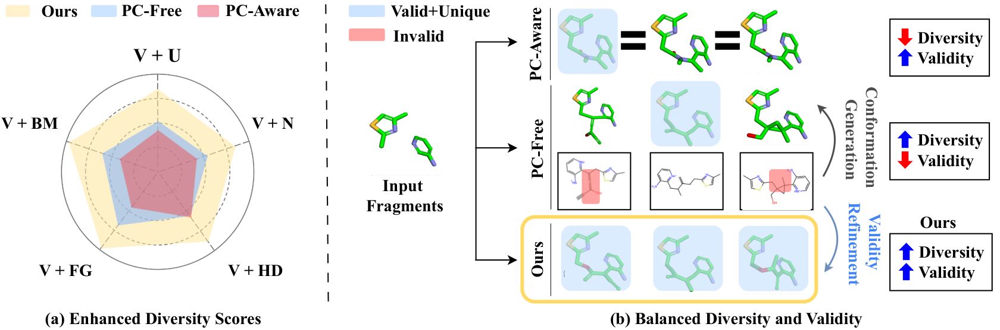
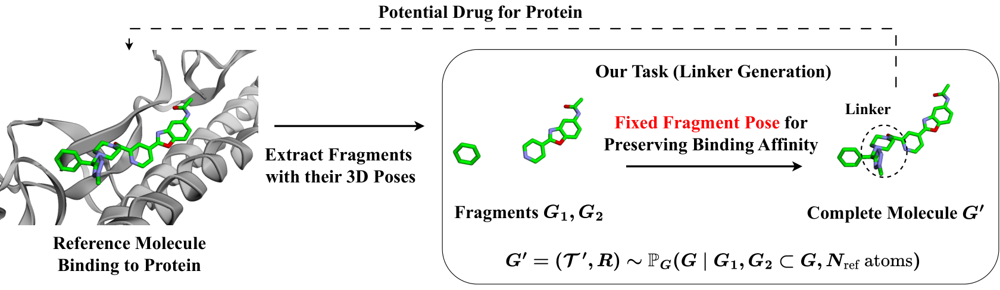
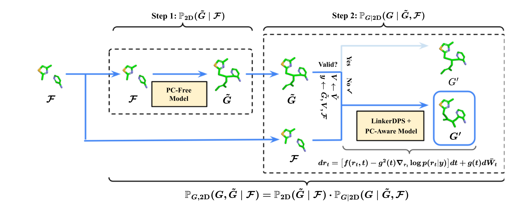

ICML 2025 Generative AI and Biology (GenBio) Workshop
HybridLinker: Topology-Guided Posterior Sampling for Enhanced Diversity and Validity in 3D Molecular Linker Generation
1KAIST 2Seoul National University 3Harvard Medical School 4McLean Hospital
† Corresponding author
Abstract
TL;DR A model that proposes diverse bonding patterns and a model that checks their 3D fit can together generate a wider range of valid linkers for the same two fragments.
Linker generation is critical in drug discovery applications such as lead optimization and PROTAC design, where molecular fragments are assembled into diverse drug candidates via molecular linker. Existing methods fall into point cloud-free and point cloud-aware categories based on their use of fragments' 3D poses alongside their topologies in sampling the linker's topology. Point cloud-free models prioritize sample diversity but suffer from lower validity due to overlooking fragments' spatial constraints, while point cloud-aware models ensure higher validity but restrict diversity by enforcing strict spatial constraints.
To overcome these trade-offs without additional training, we propose HybridLinker, a framework that enhances point cloud-aware inference by providing diverse bonding topologies from a pretrained point cloud-free model as guidance. At its core, we propose LinkerDPS, the first diffusion posterior sampling (DPS) method operating across point cloud-free and point cloud-aware spaces, bridging molecular topology with 3D point clouds via an energy-inspired function. By transferring the diverse sampling distribution of point cloud-free models into the point cloud-aware distribution, HybridLinker significantly surpasses baselines, improving both validity and diversity in foundational molecular design and applied drug optimization tasks, establishing a new DPS framework in the molecular domains beyond imaging.
How many different linkers are valid?

Method and Theory
Follow one pair of fragments through the two diagrams. Their positions stay fixed. The model first explores connections between them, then checks whether each proposed connection fits in 3D.
What stays fixed

When LinkerDPS intervenes

How a bonding pattern guides a 3D sampler
Let \(\mathcal F\) denote the fixed fragments and \(\widetilde G\) the molecule proposed by the topology model. If that proposal fails the validity check, LinkerDPS models the atom types and coordinates \(X=(V,R)\) from a posterior. All probabilities below condition on \(\mathcal F\). Writing that condition implicitly makes the two roles in the posterior easier to see.
The 3D prior \(p(X)\) favors conformations compatible with the fixed fragments. The likelihood rewards agreement with the proposed atom types \(\widetilde V\), bonds \(\widetilde E\), and coordinates \(\widetilde R\).
The indicator fixes atom identities. The displacement cost \(D\) penalizes moving far from the proposal. The bond cost \(U\) penalizes placing atoms far apart when the proposed topology connects them. During denoising, LinkerDPS evaluates this guidance at the predicted clean coordinates, so a graph proposed in 2D can influence a trajectory in 3D.
Propose a topology
FFLOM or DeLinker samples a bonding pattern from the fragments’ connectivity. This first stage can explore alternatives before committing to a linker conformation.
Refine in 3D
LinkerDPS guides DiffLinker with the proposed atom types, bonds, and conformation. The two pretrained models can be combined at inference time.
Results
On ZINC-250K, the authors generated 50 samples for each of 400 fragment pairs. With FFLOM alone, 31.25% of samples are valid and unique. HybridLinker raises that figure to 55.10% using the same topology generator. With DeLinker, overall validity rises from 57.44% to 77.27%. The two comparisons show what 3D refinement adds to each generator.
| Method | F/A | Diversity among valid samples ↑ | Validity (%) | Diversity before 3D validity checks ↑ | |||||
|---|---|---|---|---|---|---|---|---|---|
| V+U (%) | V+N (%) | V+HD | V+FG | V+BM | Uniqueness (%) | Novelty (%) | |||
| FFLOM | F | 31.25 | 31.32 | 6.38 | 16.37 | 14.48 | 37.07 | 84.04 | 58.29 |
| DeLinker | F | 38.57 | 38.53 | 7.32 | 16.20 | 17.33 | 57.44 | 63.78 | 31.63 |
| DiffLinker | A | 26.90 | 26.90 | 5.08 | 11.37 | 10.91 | 71.08 | 34.94 | 16.32 |
| 3DLinker | A | 32.61 | 32.64 | 6.14 | 15.40 | 14.23 | 65.31 | 44.31 | 21.83 |
| HybridLinker (FFLOM) | F+A | 55.10 | 55.09 | 10.81 | 23.92 | 24.59 | 69.03 | 68.39 | 44.67 |
| HybridLinker (DeLinker) | F+A | 55.02 | 55.28 | 10.21 | 21.82 | 24.23 | 77.27 | 68.09 | 35.70 |
F = point cloud-free, A = point cloud-aware. U and N denote uniqueness and novelty. HD, FG, and BM measure fingerprint diversity, functional groups, and Bemis–Murcko scaffolds. Bold, underlines, and shaded rows follow the manuscript.
Does a larger set of usable linkers help when optimizing a reference molecule? For each fragment pair, the next table asks whether any candidate improves the indicated drug-likeness scores together. The last column requires all three criteria.
| Method | QED (%) | SA (%) | PLogP (%) | Q & S (%) | S & P (%) | Q & P (%) | Q & S & P (%) |
|---|---|---|---|---|---|---|---|
| DiffLinker | 64.7 | 46.2 | 77.5 | 29.5 | 36.0 | 38.7 | 17.0 |
| FFLOM | 60.7 | 42.7 | 83.5 | 21.5 | 35.5 | 38.7 | 11.7 |
| HybridLinker (FFLOM) | 74.0 (+21.8%) | 51.0 (+19.3%) | 85.7 (+2.6%) | 30.5 (+41.8%) | 41.7 (+17.6%) | 48.5 (+25.1%) | 17.7 (+51.0%) |
| DeLinker | 74.2 | 59.7 | 83.2 | 41.5 | 49.2 | 49.7 | 24.7 |
| HybridLinker (DeLinker) | 76.7 (+3.3%) | 61.7 (+3.3%) | 84.7 (+1.8%) | 43.2 (+4.2%) | 52.2 (+6.0%) | 54.0 (+8.5%) | 27.0 (+9.0%) |
Q, S, and P denote quantitative estimate of drug-likeness, synthetic accessibility, and penalized logP. Parentheses report relative improvement over the corresponding topology generator. Emphasis follows the source.
Changing the source of fragments tests whether the trade-off carries over. On GEOM-DRUG, the FFLOM hybrid leads on valid novelty, while the DeLinker hybrid produces the largest fraction of valid, unique molecules.
| Method | F/A | Diversity among valid samples ↑ | Validity (%) | Diversity before 3D validity checks ↑ | |||||
|---|---|---|---|---|---|---|---|---|---|
| V+U (%) | V+N (%) | V+HD | V+FG | V+BM | Uniqueness (%) | Novelty (%) | |||
| FFLOM | F | 29.39 | 28.30 | 6.95 | 21.65 | 15.87 | 30.02 | 95.07 | 91.73 |
| DeLinker | F | 40.52 | 26.18 | 8.29 | 19.51 | 20.32 | 52.22 | 75.90 | 52.31 |
| DiffLinker | A | 42.24 | 30.77 | 9.15 | 19.26 | 21.65 | 64.32 | 62.32 | 46.54 |
| HybridLinker (FFLOM) | F+A | 54.64 | 49.81 | 12.82 | 33.77 | 28.91 | 56.19 | 79.29 | 72.22 |
| HybridLinker (DeLinker) | F+A | 56.41 | 38.67 | 11.33 | 25.44 | 27.18 | 71.85 | 75.33 | 54.48 |
All five methods in the source table are shown. The percentages and emphasis follow the GEOM-DRUG evaluation.
BibTeX
@inproceedings{hwang2025hybridlinker,
title = {{HybridLinker: Topology-Guided Posterior Sampling for Enhanced Diversity and Validity in 3D Molecular Linker Generation}},
author = {Minyeong Hwang and Ziseok Lee and Kwang-Soo Kim and Kyungsu Kim and Eunho Yang},
booktitle = {ICML 2025 Generative AI and Biology (GenBio) Workshop},
year = {2025},
url = {https://openreview.net/forum?id=Hwp7BC37i8}
}